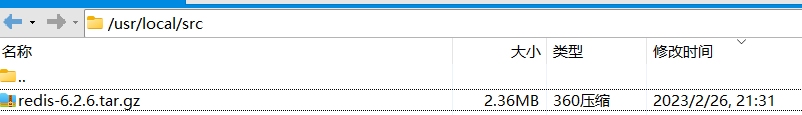
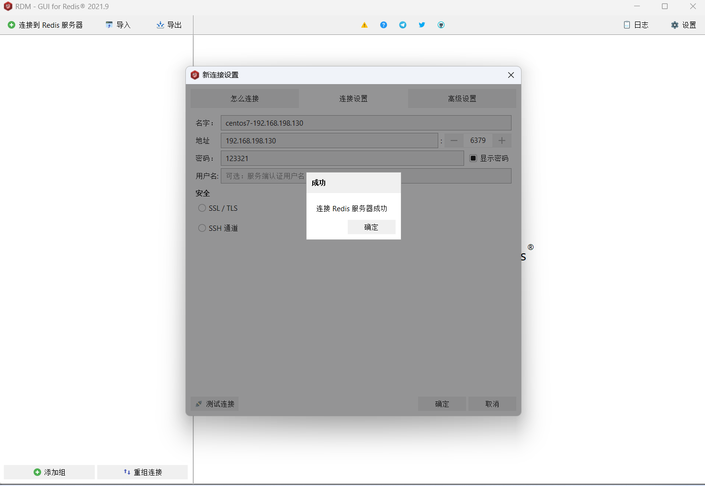
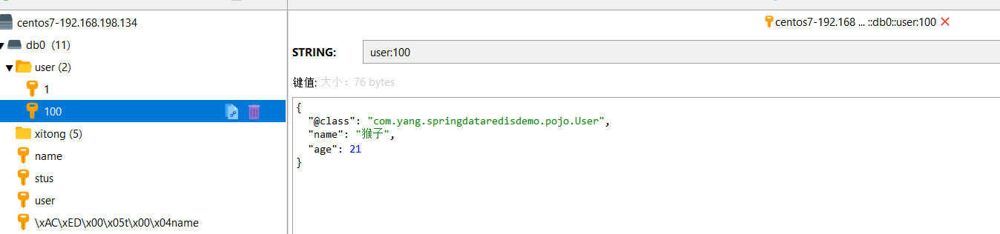

1.NoSQL与SQL
| SQL | NoSQL | |
|---|---|---|
| 数据结构 | 结构化 | 非结构化：键值类型（Redis）、文档类型（MongoDB）、列类型（HBase）、Graph类型（Neo4j） |
| 数据关联 | 关联的 | 无关联的 |
| 查询方式 | SQL查询 | 非SQL |
| 事务特性 | ACID | BASE |
| 存储方式 | 磁盘 | 内存 |
| 扩展性 | 垂直 | 水平 |
| 使用场景 | 1）数据结构固定 2）相关业务对数据安全性、一致性要求较高 | 1）数据结构不固定 2）对一致性、安全性要求不高 3）对性能要求 |
- NoSQL仅仅是一个概念，泛指非关系型的数据库
- 区别于关系数据库，它们不保证关系数据的ACID特性
- 常见的NoSQL数据库有：
Redis、MemCache、MongoDB等
2.Redis简介
Redis诞生于2009年，全称Remote Dictionary Server，远程词典服务器，是一个基于内存的键值型NoSQL数据库
特征：
- 键值型（key-value）型，value支持多种不同的数据结构，功能丰富
- 单线程，每个命令具备原子性
- 低延迟，速度快（基于内存、IO多路复用、良好的编码）
- 支持数据持久化：提供 RDB（快照）和 AOF（日志）两种持久化方式
- 支持主从集群、分片集群
- 支持多语言客户端
3.Redis安装
3.1 环境准备
本次安装Redis是基于Linux系统下安装的，因此需要一台Linux服务器或者虚拟机
- 虚拟机：VMware17
- 操作系统：CentOS-7-x86_64
- Redis：redis-6.2.6.tar
- xShell及xFtp：https://www.xshell.com/zh/free-for-home-school/
3.2 安装Redis依赖
Redis是基于C语言编写的，因此首先需要安装Redis所需要的gcc依赖
1 | yum install -y gcc tcl |
3.3 正式安装Redis
将
redis-6.2.6.tar上传至/usr/local/src目录
在xShell中
cd到/usr/local/src目录执行以下命令进行解压操作1
tar -xzf redis-6.2.6.tar.gz
解压成功后依次执行以下命令
1
2cd redis-6.2.6
make && make install安装成功后打开/usr/local/bin目录（该目录为Redis默认的安装目录）
- 该目录已经默认环境配置到环境变量，因此可以在任意目录下运行这些目录。其中：
- redis-cli：是redis提供的命令行客户端
- redis-server：是redis的服务端启动脚本
- redis-sentinel：是redis的哨兵启动脚本
- 该目录已经默认环境配置到环境变量，因此可以在任意目录下运行这些目录。其中：
3.4 启动Redis
Redis的启动方式有很多种，例如：前台启动、后台启动、开机自启
3.4.1 前台启动（不推荐）
这种启动属于前台启动，会阻塞整个会话窗口，窗口关闭或者按下
CTRL + C则Redis停止。不推荐使用。
安装完成后，在任意目录输入
redis-server命令即可启动Redis1
redis-server
3.4.2 后台启动（不推荐）
如果要让Redis以后台方式启动，则必须修改Redis配置文件，配置文件所在目录就是之前我们解压的安装包下
因为我们要修改配置文件，因此我们需要先将原文件备份一份
1
cd /usr/local/src/redis-6.2.6
1
cp redis.conf redis.conf.bck
然后修改
redis.conf文件中的一些配置1
2
3
4
5
6# 允许访问的地址，默认是127.0.0.1，会导致只能在本地访问。修改为0.0.0.0则可以在任意IP访问，生产环境不要设置为0.0.0.0
bind 0.0.0.0
# 守护进程，修改为yes后即可后台运行
daemonize yes
# 密码，设置后访问Redis必须输入密码
requirepass 1325Redis其他常用配置
1
2
3
4
5
6
7
8
9
10# 监听的端口
port 6379
# 工作目录，默认是当前目录，也就是运行redis-server时的命令，日志、持久化等文件会保存在这个目录
dir .
# 数据库数量，设置为1，代表只使用1个库，默认有16个库，编号0~15
databases 1
# 设置redis能够使用的最大内存
maxmemory 512mb
# 日志文件，默认为空，不记录日志，可以指定日志文件名
logfile "redis.log"启动Redis
1
2
3
4# 进入redis安装目录
cd /usr/local/src/redis-6.2.6
# 启动
redis-server redis.conf停止Redis服务
1
2# 通过kill命令直接杀死进程
kill -9 redis进程id1
2
3# 利用redis-cli来执行 shutdown 命令，即可停止 Redis 服务，
# 因为之前配置了密码，因此需要通过 -a 来指定密码
redis-cli -a 132537 shutdown
3.4.3 开机自启（推荐）
也可以通过配置来实现开机自启
首先，新建一个系统服务文件
1
vim /etc/systemd/system/redis.service
将以下命令粘贴进去
1
2
3
4
5
6
7
8
9
10
11[Unit]
Description=redis-server
After=network.target
[Service]
Type=forking
ExecStart=/usr/local/bin/redis-server /usr/local/src/redis-6.2.6/redis.conf
PrivateTmp=true
[Install]
WantedBy=multi-user.target然后重载系统服务
1
systemctl daemon-reload
现在，可以用下面这组命令来操作redis了
1
2
3
4
5
6
7
8# 启动
systemctl start redis
# 停止
systemctl stop redis
# 重启
systemctl restart redis
# 查看状态
systemctl status redis执行下面的命令，可以让redis开机自启
1
systemctl enable redis
4.Redis客户端
4.1 Redis命令行客户端
Redis安装完成后就自带了命令行客户端：
redis-cli，使用方式如下：1
redis-cli [options] [commonds]
其中常见的
options有：-h 127.0.0.1：指定要连接的redis节点的IP地址，默认是127.0.0.1-p 6379：指定要连接的redis节点的端口，默认是6379-a 132537：指定redis的访问密码
其中的
commonds就是Redis的操作命令，例如：ping：与redis服务端做心跳测试，服务端正常会返回pong不指定commond时，会进入
redis-cli的交互控制台：
4.2 Redis图形化桌面客户端
下载地址：https://github.com/lework/RedisDesktopManager-Windows/releases?q=2021.9&expanded=true
安装图形化客户端
如何连接到Redis


5.Redis常见命令
官方文档：https://redis.io/commands/
5.1 Redis数据结构介绍
- Redis是一个key-value的数据库，key一般是String类型，不过value的类型多种多样
- 数据结构：https://redis.io/docs/data-types/
5.2 通用命令
https://redis.io/docs/latest/commands/?group=generic
通用指令是部分数据类型的，都可以使用的指令，常见的有如下表格所示
| 指令 | 描述 |
|---|---|
| AUTH | 认证密码 |
| SELECT | 选择 Redis 数据库（索引从 0 开始） |
| KEYS | 查看符合模板的所有key，不建议在生产环境设备上使用 |
| EXISTS | 判断key是否存在 |
| TYPE | 获取键的数据类型 |
| RENAME | 将键名重命名为新键名，如果新键名已经存在，它将被覆盖 |
| RENAMENX | 如果新键名不存在，将键名重命名为新键名 |
| DEL | 删除一个指定的key |
| DBSIZE | 返回当前数据库的键的数量 |
| FLUSHDB | 删除当前数据库的所有键 |
| FLUSHALL | 删除所有数据库的所有键 |
| COPY | 将一个键的值复制到一个新键 |
| EXPIRE | 给一个key设置有效期，有效期到期时该key会被自动删除，单位秒 |
| PEXPIRE | 给一个key设置有效期，有效期到期时该key会被自动删除，单位毫秒 |
| TTL | 查看一个KEY的剩余有效期，单位秒 |
| PTTL | 查看一个KEY的剩余有效期，单位毫秒 |
| EXPIREAT | 用于设置键的过期时间，UNIX时间戳（以秒为单位），当键的过期时间到达时，Redis会自动删除该键 |
| PEXPIREAT | 用于设置键的过期时间，UNIX时间戳（以毫秒为单位），当键的过期时间到达时，Redis会自动删除该键 |
| EXPIRETIME | 返回键的过期时间，UNIX时间戳（以秒为单位） |
| PEXPIRETIME | 返回键的过期时间，UNIX时间戳（以毫秒为单位） |
| PERSIST | 移除键的过期时间，使其变为持久化 |
| MOVE | 将一个键（key）从当前数据库（database）移动到另一个数据库（仅限同一 Redis 实例内迁移） |
| MIGRATE | 将键从当前 Redis 实例原子性迁移到目标实例，支持单键或批量迁移，迁移成功后默认删除源键（可通过 COPY 保留）（自动完成序列化与迁移）MIGRATE host port <key | “”> destination-db timeout [COPY] [REPLACE] [AUTH password | AUTH2 username password] [KEYS key [key …]] |
| DUMP | 将指定 key 的值序列化为二进制格式，包含 64 位校验和以确保数据完整性 |
| RESTORE | 将 DUMP 生成的序列化数据反序列化为原始值，并存储到指定 key（DUMP+RESTORE：支持跨实例迁移，但需手动处理序列化数据） |
| RANDOMKEY | 从当前选定的数据库中返回一个随机key |
| OBJECT ENCODING | 返回键值对象的内部编码格式 |
| OBJECT REFCOUNT | 返回键值对象的引用计数（主要用于共享对象调试） |
| OBJECT IDLETIME | 返回键自上次访问后的空闲时间（秒级精度） |
| OBJECT FREQ | 返回键的访问频率计数器（对数尺度，用于 LFU 淘汰策略） |
| OBJECT HELP | 列出所有子命令的简要说明 |
| SCAN | 分批次遍历哈希槽（时间复杂度 O(1)），避免 KEYS * 的全局阻塞问题 |
| SORT | 用于对列表、集合、有序集合中的元素进行排序并返回结果（不影响原始数据顺序） |
| SORT_RO | 是 SORT 命令的只读变体，语法与 SORT 完全相同，但不支持 STORE 选项（即不会写入新键） |
| TOUCH | TOUCH 用于 更新指定键的最后访问时间，但不访问数据内容，主要用于维护键的过期机制或刷新访问状态 |
| UNLINK | 异步删除键（非阻塞，后台线程执行），适用于大键删除 |
| WAIT | 阻塞客户端，直到指定数量的副本节点完成数据同步(主从数据一致性) |
| WAITAOF | 阻塞当前客户端，直到指定数量的 AOF 持久化操作完成(强一致性场景) |
可以通过help [command] 可以查看一个命令的具体用法！
1 | 192.168.198.148:6379> help @generic |
5.3 String类型
String类型，也就是字符串类型，是Redis中最简单的存储类型
- value是字符串，不过根据字符串的格式不同，又可以分为3类：
string：普通字符串int：整数类型，可以做自增、自减操作float：浮点类型，可以做自增、自减操作
不管是哪种格式，底层都是字节数组形式存储，只不过是编码方式不同。字符串类型的最大空间不能超过512m.
| KEY | VALUE |
|---|---|
| msg | hello world |
| num | 10 |
| score | 92.5 |
String的常见命令有如下表格所示
| 命令 | 描述 |
|---|---|
| APPEND | 若键存在且值为字符串类型，则将新值追加到原有字符串末尾；若键不存在，则创建新键并将值设为追加内容（等效于 SET key value） 支持追加二进制数据（如图片/音频文件头） 返回追加操作后字符串的总长度（单位：字节） |
| DECR | 将键（key）存储的整数值地减 1 若键不存在，则先将其值初始化为 0，再执行减 1 操作（结果为 -1）若键值非整数类型（如字符串、浮点数），将返回错误 值必须在 64 位有符号整数范围内（ -2^63 至 2^63-1），否则报错 |
| DECRBY | 将键（key）存储的整数值减去指定数值 若键不存在，则先将其值初始化为 0，再执行减法操作若键值非整数类型（如字符串、浮点数），将返回错误 支持负数减量：若 decrement 为负数，则等效于 INCRBY（数值增加） |
| GET | 根据key获取String类型的value |
| GETDEL | 获取并删除指定键（key）的字符串值 若键存在且值为字符串类型，则返回其值并删除键 |
| GETEX | 获取字符串键的值并可选地修改其过期时间 |
| GETRANGE | 获取字符串值中指定范围内的子字符串 |
| GETSET | 设置新值并返回旧值，适用于需获取原值后更新的场景 |
| INCR | 让一个整型的key自增1 |
| INCRBY | 让一个整型的key自增并指定步长，例如：incrby num 2 让num值自增2 |
| INCRBYFLOAT | 对字符串键存储的数字值执行浮点数加法操作 若键不存在，则先将其值初始化为 0，再执行加法操作 |
| LCS | 计算两个字符串最长公共子序列 |
| MGET | 批量获取多个键的值 |
| MSET | 批量添加多个String类型的键值对 |
| MSETNX | 设置多个键值对，但仅当所有键均不存在时生效 |
| PSETEX | 以毫秒为单位设置键值对并指定生存时间（TTL） |
| SET | 添加或者修改已经存在的一个key的值 |
| SETEX | 以秒为单位设置键值对并指定生存时间（TTL） |
| SETNX | 仅在键不存在时设置值 |
| SETRANGE | 从指定偏移量（offset）开始覆写字符串键的值 |
| STRLEN | 获取字符串键值的字节长度 |
| SUBSTR | 根据指定的起始和结束位置索引返回子串内容（包含两端索引对应的字符） |
1 | 192.168.198.148:6379> help @string |
- Redis的key允许有多个单词形成层级结构，多个单词之间用” ：“隔开，格式如下：
1 | 项目名:业务名:类型:id |
这个格式并非固定，也可以根据自己的需求来删除或添加词条
例如项目名称叫
heima，有user和product两种不同类型的数据，可以这样定义key：- user相关的key：
heima:user:1 - product相关的key：
heima:product:1
- user相关的key：
如果Value是一个Java对象，例如一个User对象，则可以将对象序列化为JSON字符串后存储
| KEY | VALUE |
|---|---|
| heima:user:1 | {“id”:1, “name”: “yty”, “age”: 18} |
| heima:product:1 | {“id”:1, “name”: “小米11”, “price”: 4999} |
1 | 127.0.0.1:6379> set baidumap:user:1 '{"id":1,"name":"yangtongyu","age":18}' |
5.4 Hash类型
Hash类型，也叫散列，其value是一个无序字典，类似于Java中的
HashMap结构Hash结构可以将对象中的每个字段独立存储，可以针对单个字段做CRUD
Hash的常见命令有：
命令 描述 HDEL 删除key中一个或多个field字段，若字段不存在则忽略 HEXISTS 检查key中指定字段是否存在。若字段存在则返回 1；若字段不存在或key不存在，则返回 0 HEXPIRE 为key中的指定字段设置过期时间（以秒为单位），到期后字段自动删除 HEXPIREAT HEXPIRETIME HGET 获取一个hash类型key的field的值 HGETALL 获取一个hash类型的key中的所有的field和value HGETDEL 获取并删除key中指定字段的值。若字段存在，则返回其值并删除字段；若字段或键不存在，返回null HGETEX 获取key中的指定字段值并同时设置过期时间 HINCRBY 让一个hash类型key的字段值自增并指定步长 HINCRBYFLOAT 让一个hash类型key的字段值自增并指定步长，浮点数 HKEYS 获取一个hash类型的key中的所有的field HLEN 获取一个hash类型的key中的field数量 HMSET hmset 和 hset 效果相同 ，4.0之后hmset可以弃用了 HMGET 批量获取多个hash类型key的field的值 HPERSIST 移除key中指定字段的过期时间 HPEXPIRE 为key中的指定字段设置过期时间（以毫秒为单位），到期后字段自动删除 HPEXPIREAT HPEXPIRETIME HPTTL 获取key中指定字段的过期时间，单位：毫秒 HRANDFIELD 随机返回key中指定数量的字段 HSCAN HSET 添加或者修改key的field的值，支持单字段或多字段操作 HSETEX HSETNX 添加一个hash类型的key的field值，前提是这个field不存在，否则不执行 HSTRLEN 获取key中指定字段（field）对应值的字符串字节长度 HTTL 获取key中指定字段的过期时间，单位：秒 HVALS 获取一个hash类型的key中的所有的value 1
2
3
4
5
6
7
8
9
10
11
12
13
14
15
16
17
18
19
20
21
22
23
24
25
26
27
28
29
30
31
32
33
34
35
36
37
38
39
40
41
42
43
44
45
46
47
48
49
50
51
52
53
54
55
56
57
58
59
60
61
62
63
64
65
66
67
68
69
70
71
72
73
74
75
76
77
78
79
80
81
82
83
84
85
86
87
88
89
90
91
92
93
94
95
96
97
98
99
100
101
102
103
104
105
106
107
108
109
110
111HDEL key field [field ...]
summary: Deletes one or more fields and their values from a hash. Deletes the hash if no fields remain.
since: 2.0.0
HEXISTS key field
summary: Determines whether a field exists in a hash.
since: 2.0.0
HEXPIRE key seconds [NX|XX|GT|LT] FIELDS numfields field [field ...]
summary: Set expiry for hash field using relative time to expire (seconds)
since: 7.4.0
HEXPIREAT key unix-time-seconds [NX|XX|GT|LT] FIELDS numfields field [field ...]
summary: Set expiry for hash field using an absolute Unix timestamp (seconds)
since: 7.4.0
HEXPIRETIME key FIELDS numfields field [field ...]
summary: Returns the expiration time of a hash field as a Unix timestamp, in seconds.
since: 7.4.0
HGET key field
summary: Returns the value of a field in a hash.
since: 2.0.0
HGETALL key
summary: Returns all fields and values in a hash.
since: 2.0.0
HGETDEL key FIELDS numfields field [field ...]
summary: Returns the value of a field and deletes it from the hash.
since: 8.0.0
HGETEX key [EX seconds|PX milliseconds|EXAT unix-time-seconds|PXAT unix-time-milliseconds|PERSIST] FIELDS numfields field [field ...]
summary: Get the value of one or more fields of a given hash key, and optionally set their expiration.
since: 8.0.0
HINCRBY key field increment
summary: Increments the integer value of a field in a hash by a number. Uses 0 as initial value if the field doesn't exist.
since: 2.0.0
HINCRBYFLOAT key field increment
summary: Increments the floating point value of a field by a number. Uses 0 as initial value if the field doesn't exist.
since: 2.6.0
HKEYS key
summary: Returns all fields in a hash.
since: 2.0.0
HLEN key
summary: Returns the number of fields in a hash.
since: 2.0.0
HMGET key field [field ...]
summary: Returns the values of all fields in a hash.
since: 2.0.0
HMSET key field value [field value ...]
summary: Sets the values of multiple fields.
since: 2.0.0
HPERSIST key FIELDS numfields field [field ...]
summary: Removes the expiration time for each specified field
since: 7.4.0
HPEXPIRE key milliseconds [NX|XX|GT|LT] FIELDS numfields field [field ...]
summary: Set expiry for hash field using relative time to expire (milliseconds)
since: 7.4.0
HPEXPIREAT key unix-time-milliseconds [NX|XX|GT|LT] FIELDS numfields field [field ...]
summary: Set expiry for hash field using an absolute Unix timestamp (milliseconds)
since: 7.4.0
HPEXPIRETIME key FIELDS numfields field [field ...]
summary: Returns the expiration time of a hash field as a Unix timestamp, in msec.
since: 7.4.0
HPTTL key FIELDS numfields field [field ...]
summary: Returns the TTL in milliseconds of a hash field.
since: 7.4.0
HRANDFIELD key [count [WITHVALUES]]
summary: Returns one or more random fields from a hash.
since: 6.2.0
HSCAN key cursor [MATCH pattern] [COUNT count] [NOVALUES]
summary: Iterates over fields and values of a hash.
since: 2.8.0
HSET key field value [field value ...]
summary: Creates or modifies the value of a field in a hash.
since: 2.0.0
HSETEX key [FNX|FXX] [EX seconds|PX milliseconds|EXAT unix-time-seconds|PXAT unix-time-milliseconds|KEEPTTL] FIELDS numfields field value [field value ...]
summary: Set the value of one or more fields of a given hash key, and optionally set their expiration.
since: 8.0.0
HSETNX key field value
summary: Sets the value of a field in a hash only when the field doesn't exist.
since: 2.0.0
HSTRLEN key field
summary: Returns the length of the value of a field.
since: 3.2.0
HTTL key FIELDS numfields field [field ...]
summary: Returns the TTL in seconds of a hash field.
since: 7.4.0
HVALS key
summary: Returns all values in a hash.
since: 2.0.0
1 | 127.0.0.1:6379> hset baidumap:user:1 name yangtong age 19 |
5.5 List类型
- Redis中的List类型与Java中的LinkedList类似，可以看做是一个双向链表结构。既可以支持正向检索和也可以支持反向检索
- 特征也与
LinkedList类似：- 有序
- 元素可以重复
- 插入和删除快
- 查询速度一般
List的常见命令有
| 命令 | 描述 |
|---|---|
| BLMOVE | 将元素从源列表（source）移动到目标列表（destination），返回移动的元素，阻塞客户端-支持超时 |
| BLMPOP | |
| BLPOP | 弹出列表左端元素，若列表为空，客户端会阻塞直到超时或新元素加入 支持同时监听多个列表，按顺序检查是否有可弹出元素 阻塞客户端-支持超时 |
| BRPOP | 弹出列表右端元素，若列表为空，客户端会阻塞直到超时或新元素加入 支持同时监听多个列表，按顺序检查是否有可弹出元素 阻塞客户端-支持超时 |
| BRPOPLPUSH | 从源列表（source）尾部弹出元素，并插入目标列表（destination）头部若源列表为空，客户端阻塞等待元素出现（支持超时设置） |
| LINDEX | 获取指定索引位置的元素，支持正负索引 |
| LINSERT | 在列表的指定元素前或后插入新元素，若目标元素不存在或列表为空，则不执行操作 |
| LLEN | 返回指定键名对应的列表元素数量 |
| LMOVE | 将元素从源列表（source）移动到目标列表（destination），返回移动的元素，不阻塞客户端 |
| LMPOP | |
| LPOP | 移除并返回列表的第一个元素（即左端元素） |
| LPOS | 查找指定元素在列表（List）中的索引位置 |
| LPUSH | 向列表（List）头部（左侧）插入一个或多个元素，列表不存在新建 |
| LPUSHX | 向已存在的列表头部插入一个或多个值，列表不存在返回0 |
| LRANGE | 获取列表（List）指定区间内元素，支持正负索引定位元素位置 |
| LREM | 从列表（List）中移除指定值元素，支持根据 count 参数控制移除方向和数量 |
| LSET | 修改列表（List）中指定索引位置的元素值，若索引越界或键不存在会返回错误 |
| LTRIM | 截取列表（List），仅保留指定索引范围内的元素，其余元素将被删除 |
| RPOP | 移除并返回列表（List）最右侧元素 |
| RPOPLPUSH | 从源列表尾部移除元素并插入到目标列表头部 |
| RPUSH | 向列表（List）尾部（右侧）插入一个或多个元素，列表不存在新建 |
| RPUSHX | 向已存在的列表尾部插入一个或多个值，列表不存在返回0 |
1 | 127.0.0.1:6379> help @list |
1 | 127.0.0.1:6379> lpush list1 1 2 3 |
思考问题
- 如何利用List结构模拟一个栈?
- 先进后出，入口和出口在同一边
- 如何利用List结构模拟一个队列?
- 先进先出，入口和出口在不同边
- 如何利用List结构模拟一个阻塞队列?
- 入口和出口在不同边
- 出队时采用BLPOP或BRPOP
5.6 Set类型
- Redis的Set结构与Java中的HashSet类似，可以看做是一个value为null的HashMap。因为也是一个hash表，因此具备与HashSet类似的特征
- 无序
- 元素不可重复
- 查找快
- 支持交集、并集、差集等功能
Set的常见命令有
| 命令 | 描述 |
|---|---|
| SADD | 向集合中添加一个或多个成员 |
| SCARD | 获取集合的成员数量 |
| SDIFF | 计算多个集合的差集，返回仅存在于第一个集合中且不在其他集合中的成员 |
| SDIFFSTORE | 计算多个集合的差集，并将结果存储到指定的目标集合中。若目标集合已存在，则直接覆盖其内容 |
| SINTER | 计算多个集合的交集，返回所有给定集合共有的成员。若任意集合不存在或为空集，则结果为空集 |
| SINTERCARD | 计算多个集合的交集基数（元素数量），直接返回交集成员的个数而非具体成员 |
| SINTERSTORE | 计算多个集合的交集并存储到新键 |
| SISMEMBER | 检查元素是否属于集合 |
| SMEMBERS | 返回集合所有成员（无序） |
| SMISMEMBER | 批量检查多个元素是否属于集合 |
| SMOVE | 将元素从源集合移动到目标集合 |
| SPOP | 随机移除并返回集合中的元素 |
| SRANDMEMBER | 随机返回元素（不移除） |
| SREM | 删除集合中的指定元素 |
| SSCAN | 增量迭代集合成员 |
| SUNION | 计算多个集合的并集 |
| SUNIONSTORE | 计算并集并存储到新键 |
1 | 127.0.0.1:6379> help @set |
1 | 127.0.0.1:6379> SADD s1 a b c |
5.7 SortedSet类型
Redis的SortedSet是一个可排序的set集合，与Java中的TreeSet有些类似，但底层数据结构却差别很大。SortedSet中的每一个元素都带有一个score属性，可以基于score属性对元素排序，底层的实现是一个跳表（SkipList）加 hash表
SortedSet具备下列特性：
- 可排序
- 元素不重复
- 查询速度快
因为SortedSet的可排序特性，经常被用来实现排行榜这样的功能
SortedSet的常见命令有
| 命令 | 描述 |
|---|---|
| BZMPOP | 阻塞式弹出多个有序集合中最高/最低分元素 |
| BZPOPMAX | |
| BZPOPMIN | |
| ZADD | 向有序集合（Sorted Set）添加一个或多个成员（member）及其对应的分数（score）。若成员已存在，则更新其分数并重新排序 |
| ZCARD | 获取有序集合（Sorted Set）的基数（即成员数量） |
| ZCOUNT | 计算有序集合（Sorted Set）中分数（score）在指定区间 [min, max] 内的成员数量 |
| ZDIFF | 计算多个有序集合（Sorted Set）的差集，返回结果中仅包含存在于第一个集合但不在后续集合中的成员 |
| ZDIFFSTORE | 计算多个有序集合（Sorted Set）的差集，并将结果存储到一个新的有序集合中 |
| ZINCRBY | 对有序集合（Sorted Set）中指定成员的分数（score）进行增减操作 |
| ZINTER | 计算多个有序集合（Sorted Set）的交集，返回同时存在于所有指定集合中的成员 |
| ZINTERCARD | 计算多个有序集合（Sorted Set）的交集基数（即交集成员的数量），直接返回结果数量而不存储具体成员 |
| ZINTERSTORE | 计算多个有序集合（Sorted Set）的交集，并将结果存储到新的有序集合中 |
| ZLEXCOUNT | 计算有序集合（Sorted Set）中指定字典区间内的成员数量 |
| ZMPOP | 从有序集合(zset)中弹出指定数量的最高分或最低分元素 |
| ZMSCORE | 获取有序集合(zset)中一个或多个成员的分数值 |
| ZPOPMAX | 从有序集合(zset)中弹出并返回分数最高的成员 |
| ZPOPMIN | 从有序集合(zset)中弹出并返回分数最低的成员 |
| ZRANDMEMBER | 从有序集合(zset)中随机返回一个或多个成员 |
| ZRANGE | 获取有序集合（zset）中指定分数范围内的成员，按分数升序排列 |
| ZRANGEBYLEX | 在所有成员分数相同的有序集合中，按字典序(lexicographical order)获取指定范围内的成员 |
| ZRANGEBYSCORE | 从有序集合中获取指定分数范围内的成员，按分数升序排列 |
| ZRANGESTORE | |
| ZRANK | 获取有序集合中指定成员的升序排名（分数从小到大排序） |
| ZREM | 从有序集合（Sorted Set）中移除指定的一个或多个成员 |
| ZREMRANGEBYLEX | 移除有序集合中按字典序（lexicographical order）排列的指定范围内的成员，适用于所有成员分数（score）相同的有序集合 |
| ZREMRANGEBYRANK | 移除有序集合中指定排名（rank）区间内的成员，按分数升序排列的索引范围操作 |
| ZREMRANGEBYSCORE | 移除有序集合中指定分数（score）区间内的所有成员，支持闭区间和开区间操作 |
| ZREVRANGE | 从有序集合中按分数降序返回指定排名区间的成员，是ZRANGE的逆序版本 |
| ZREVRANGEBYSCORE | 从有序集合中按分数降序返回指定分数区间的成员，是ZRANGEBYSCORE的逆序版本 |
| ZREVRANK | 获取有序集合中指定成员的排名（按分数降序排列），排名从0开始计算（最高分为第0名） |
| ZSCAN | 增量迭代有序集合中的元素及其分数 |
| ZSCORE | 获取有序集合中指定成员的分数值 |
| ZUNION | 计算多个有序集合的并集并直接返回结果（不存储结果），是ZUNIONSTORE的非存储版本 |
| ZUNIONSTORE | 计算多个有序集合的并集并将结果存储到新集合中，支持权重和聚合操作 |
1 | 127.0.0.1:6379> help @sorted-set |
注意：所有的排名默认都是升序，如果要降序则在命令的Z后面添加REV即可
1 | 127.0.0.1:6379> ZADD ss 85 Jack 89 Lucy 82 Rose 95 Tom 78 Jerry 92 Amy 76 Miles |
6.Java客户端
- Jedis：官方提供的原生 Java 客户端，支持同步阻塞式 IO
- Lettuce：基于 Netty 的异步非阻塞客户端，支持响应式编程
- Spring Data Redis：Spring 封装的高层抽象，支持 Jedis/Lettuce 作为底层连接
6.1 Jedis
6.1.1 Jedis快速入门
Jedis的官网地址： https://github.com/jedis
新建一个Maven工程并引入以下依赖
1
2
3
4
5
6<!--引入Jedis依赖-->
<dependency>
<groupId>redis.clients</groupId>
<artifactId>jedis</artifactId>
<version>4.3.0</version>
</dependency>编写一个操作数据的方法
1
2
3
4
5
6
7
8
9
10
11
12
13
14
15
16
17
18
19
20
21
22
23
24
25
26
27
28
29
30
31
32
33
34
35
36
37
38
39
40
41
42
43
44
45
46
47
48
49
50
51
52
53
54
55
56
57
58
59
60
61
62
63
64
65
66
67
68
69
70
71
72
73
74
75
76
77
78
79
80
81
82
83
84
85
86
87
88package com.yang.test;
import org.testng.annotations.AfterMethod;
import org.testng.annotations.BeforeMethod;
import org.testng.annotations.Test;
import redis.clients.jedis.Jedis;
import java.util.HashMap;
import java.util.List;
import java.util.Map;
import java.util.Set;
public class JedisTest {
private Jedis jedis;
//被该注解修饰的方法每次执行其他方法前自动执行
void setUp(){
// 1. 获取连接
jedis = new Jedis("192.168.198.134",6379);
// 2. 设置密码
jedis.auth("123456");
// 3. 选择库（默认是下标为0的库）
jedis.select(0);
}
public void test(){
//1.String
//往redis中存放一条String类型的数据并获取返回结果
String result = jedis.set("name", "峡谷杨爹-鲁班七号");
System.out.println("result = " + result);
//从redis中获取一条String数据
String name = jedis.get("name");
System.out.println("name = " + name);
//2.Hash
HashMap<String, String> hashMap = new HashMap<>();
hashMap.put("name","峡谷杨爹");
hashMap.put("age","99999");
//往redis中存放一条Hash类型的数据并获取返回结果
long hash1 = jedis.hset("hash1", hashMap);
System.out.println("hash1 = " + hash1);
//从redis中获取一条Hash数据
Map<String, String> map = jedis.hgetAll("hash1");
System.out.println(map);
//3.List
//往redis中存放一条List类型的数据并获取返回结果
long lpush = jedis.lpush("list1", "l1", "l3", "l2");
System.out.println("lpush = " + lpush);
//从redis中获取一条List数据
List<String> list = jedis.lrange("list1", 0, -1);
System.out.println(list);
//4.Set
//往redis中存放一条Set类型的数据并获取返回结果
long sadd = jedis.sadd("set1", "s1", "s2", "s1");
System.out.println("sadd = " + sadd);
//从redis中获取一条Set数据
Set<String> set = jedis.smembers("set1");
System.out.println(set);
//5.Zset
HashMap<String, Double> setMap = new HashMap<>();
setMap.put("name",99.9);
setMap.put("age",15.5);
//往redis中存放一条Zset类型的数据并获取返回结果
long zset1 = jedis.zadd("zset1", setMap);
System.out.println("zset1 = " + zset1);
//从redis中获取一条Zset数据
List<String> zset = jedis.zrange("zset1", 0, -1);
System.out.println(zset);
}
//被该注解修饰的方法会在每次执行其他方法后执行
void tearDown(){
// 1.释放资源
if (jedis != null){
jedis.close();
}
}
}
6.1.2 Jedis连接池
Jedis本身是线程不安全的，并且频繁的创建和销毁连接会有性能损耗，因此我们推荐大家使用Jedis连接池代替Jedis的直连方式
1 | import redis.clients.jedis.Jedis; |
1 | package com.yang.test; |
6.2 SpringDataRedis
SpringData是Spring中数据操作的模块，包含对各种数据库的集成，其中对Redis的集成模块就叫做
SpringDataRedis
- 提供了对不同Redis客户端的整合（
Lettuce和Jedis） - 提供了
RedisTemplate统一API来操作Redis - 支持Redis的发布订阅模型
- 支持Redis哨兵和Redis集群
- 支持基于Lettuce的响应式编程
- 支持基于JDK、JSON、字符串、Spring对象的数据序列化及反序列化
- 支持基于Redis的JDKCollection实现
SpringDataRedis中提供了RedisTemplate工具类，其中封装了各种对Redis的操作。并且将不同数据类型的操作API封装到了不同的类型中：
| API | 返回值类型 | 备注 |
|---|---|---|
| redisTemplate.opsForValue() | ValueOperations | 操作String类型数据 |
| redisTemplate.opsForHash() | HashOperations | 操作Hash类型数据 |
| redisTemplate.opsForList() | ListOperations | 操作List类型数据 |
| redisTemplate.opsForSet() | SetOperations | 操作Set类型数据 |
| redisTemplate.opsForZSet() | ZSetOperations | 操作SortedSet类型数据 |
| redisTemplate | 通用命令 |
1 |
|
6.2.1 SpringDataRedis快速入门
SpringBoot已经提供了对SpringDataRedis的支持，使用非常简单
首先新建一个Spring Boot工程
编写配置文件
application.yml（连接池的配置在实际开发中是根据需求来的）1
2
3
4
5
6
7
8
9
10
11spring:
redis:
host: 192.168.198.134 #指定redis所在的host
port: 6379 #指定redis的端口
password: 123321 #设置redis密码
lettuce:
pool:
max-active: 8 #最大连接数
max-idle: 8 #最大空闲数
min-idle: 0 #最小空闲数
max-wait: 100ms #连接等待时间编写测试类执行测试方法
1
2
3
4
5
6
7
8
9
10
11
12
13
14
15
16
17
18
19
20
21
22
23
24import org.junit.jupiter.api.Test;
import org.springframework.beans.factory.annotation.Autowired;
import org.springframework.boot.test.context.SpringBootTest;
import org.springframework.data.redis.core.RedisTemplate;
import org.springframework.data.redis.core.ValueOperations;
class SpringdataredisDemoApplicationTests {
private RedisTemplate redisTemplate;
void testString() {
// 1.通过RedisTemplate获取操作String类型的ValueOperations对象
ValueOperations ops = redisTemplate.opsForValue();
// 2.插入一条数据
ops.set("name","齐天大圣");
// 3.获取数据
String name = (String) ops.get("name");
System.out.println("name = " + name);
}
}
SpringDataRedis + jedis
1 | <dependencies> |
1 | spring: |
6.2.2 RedisSerializer配置
RedisTemplate可以接收任意Object作为值写入Redis，只不过写入前会把Object序列化为字节形式，
默认是采用JDK序列化，得到的结果是这样的
缺点：
- 可读性差
- 内存占用较大
可以通过自定义RedisTemplate序列化的方式来解决l
1 | <!--Jackson依赖--> |
编写一个配置类
RedisConfig1
2
3
4
5
6
7
8
9
10
11
12
13
14
15
16
17
18
19
20
21
22
23
24
25
public class RedisConfig {
public RedisTemplate<String,Object> redisTemplate(RedisConnectionFactory factory){
// 1.创建RedisTemplate对象
RedisTemplate<String ,Object> redisTemplate = new RedisTemplate<>();
// 2.设置连接工厂
redisTemplate.setConnectionFactory(factory);
// 3.创建序列化对象
StringRedisSerializer stringRedisSerializer = new StringRedisSerializer();
GenericJackson2JsonRedisSerializer genericJackson2JsonRedisSerializer = new GenericJackson2JsonRedisSerializer();
// 4.设置key和hashKey采用String的序列化方式
redisTemplate.setKeySerializer(stringRedisSerializer);
redisTemplate.setHashKeySerializer(stringRedisSerializer);
// 5.设置value和hashValue采用json的序列化方式
redisTemplate.setValueSerializer(genericJackson2JsonRedisSerializer);
redisTemplate.setHashValueSerializer(genericJackson2JsonRedisSerializer);
return redisTemplate;
}
}此时我们已经将RedisTemplate的key设置为
String序列化，value设置为Json序列化的方式，再来执行方法测试由于我们设置的value序列化方式是Json的，因此我们可以直接向redis中插入一个对象
1
2
3
4
5
6
void testSaveUser() {
redisTemplate.opsForValue().set("user:100", new User("猴子", 21));
User user = (User) redisTemplate.opsForValue().get("user:100");
System.out.println("User = " + user);
}
为了在反序列化时知道对象的类型，JSON序列化器会将类的class类型写入json结果中，存入Redis，会带来额外的内存开销，可以通过下文的
StringRedisTemplate来解决这个问题
6.2.3 StringRedisTemplate
为了节省内存空间，我们并不会使用JSON序列化器来处理value，而是统一使用String序列化器，要求只能存储String类型的key和value。当需要存储Java对象时，手动完成对象的序列化和反序列化。
Spring默认提供了一个StringRedisTemplate类，它的key和value的序列化方式默认就是String方式。省去了我们自定义RedisTemplate的过程
我们可以直接编写一个测试类使用StringRedisTemplate来执行以下方法
1
2
3
4
5
6
7
8
9
10
11
12
13
14
15
16
17
18
19
20
21
22
23
24
25
26
27
28
29
30
31
32
33import com.fasterxml.jackson.core.JsonProcessingException;
import com.fasterxml.jackson.databind.ObjectMapper;
import com.yang.springdataredisdemo.pojo.User;
import org.junit.jupiter.api.Test;
import org.springframework.boot.test.context.SpringBootTest;
import org.springframework.data.redis.core.StringRedisTemplate;
import javax.annotation.Resource;
class RedisStringTemplateTest {
private StringRedisTemplate stringRedisTemplate;
private static final ObjectMapper mapper = new ObjectMapper();
void testSaveUser() throws JsonProcessingException {
// 1.创建对象
User user = new User("花木兰", 17);
// 2.将要存入的对象通过Json序列化对象转换为字符串
String userJson1 = mapper.writeValueAsString(user);
// 3.通过StringRedisTemplate将数据存入redis
stringRedisTemplate.opsForValue().set("user:200",userJson1);
// 4.通过key取出value
String userJson2 = stringRedisTemplate.opsForValue().get("user:200");
// 5.由于取出的值是String类型的Json字符串，因此我们需要通过Json序列化对象来转换为java对象
User user1 = mapper.readValue(userJson2, User.class);
// 6.打印结果
System.out.println("user1 = " + user1);
}
}
6.3 总结
RedisTemplate的两种序列化实践方案，两种方案各有各的优缺点，可以根据实际情况选择使用
方案一：
- 自定义RedisTemplate
- 修改RedisTemplate的序列化器为GenericJackson2JsonRedisSerializer
方案二：
- 使用StringRedisTemplate
- 写入Redis时，手动把对象序列化为JSON
- 读取Redis时，手动把读取到的JSON反序列化为对象